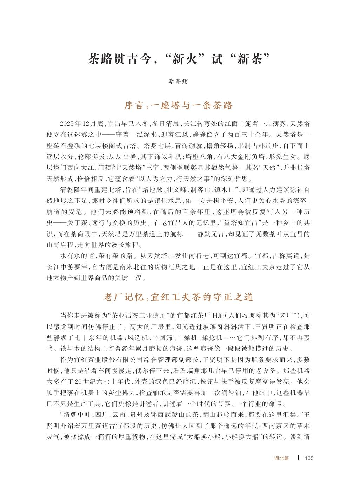
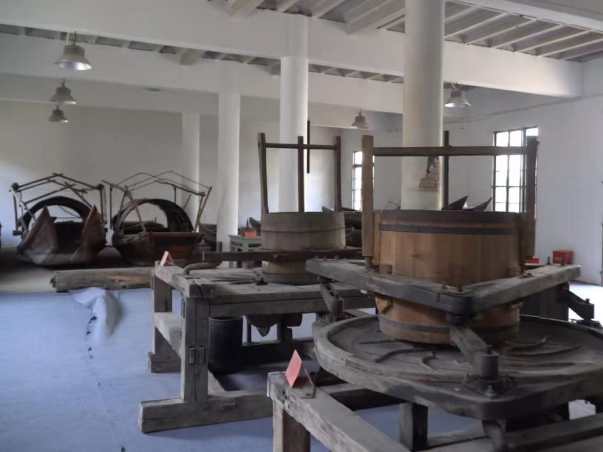
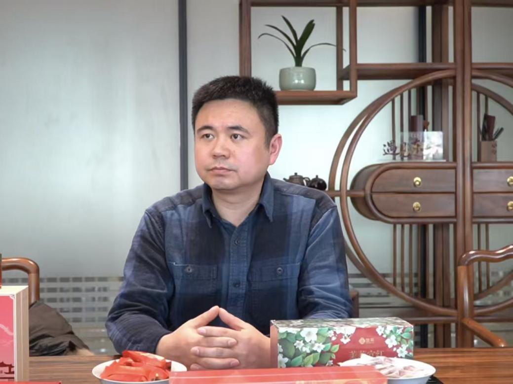
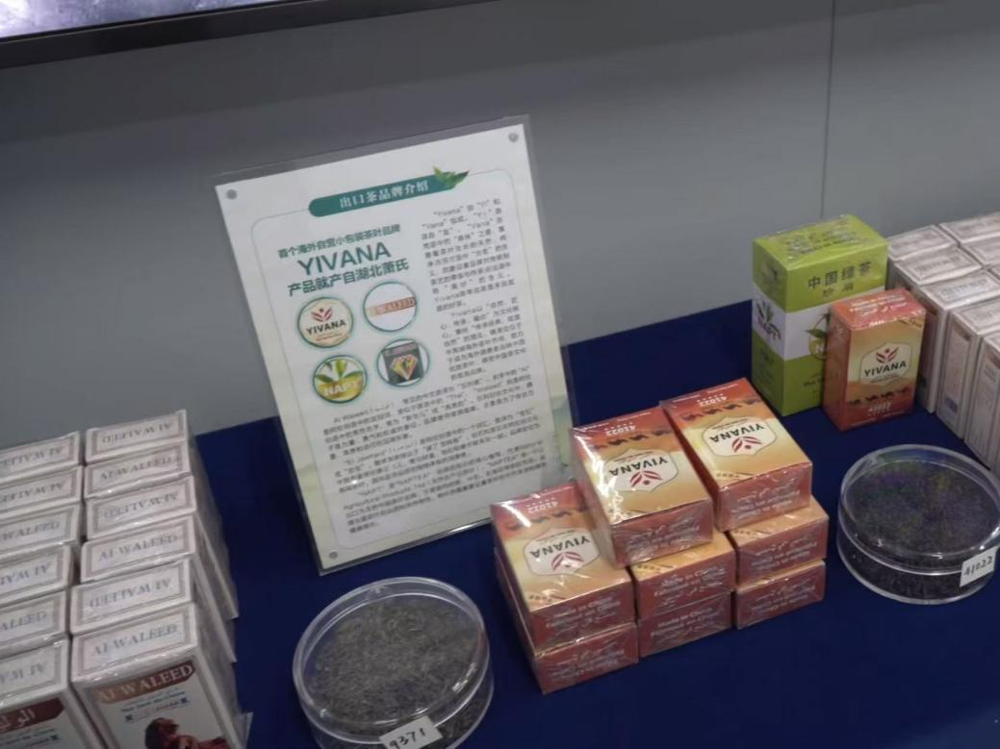

一座塔与一条茶路
从冬晨的雾与江风进入，给历史一个可感的空间坐标。
“新火”试“新茶”
我希望写下的不只是茶道的历史，而是历史怎样留在人的动作、物的痕迹和今天的生活里。以天然塔为起点，走入老厂与新车间，再回到茶山与江岸：让采访材料成为有场景、有声音、有节奏的纪行文字。

原稿的五个部分从“塔”出发，最后回到“塔”。中间不是景点罗列，而是由守护传统的人、回应当下的工艺、进入生活的茶，共同回答“传统如何继续发生”。
从冬晨的雾与江风进入，给历史一个可感的空间坐标。
以王贤明与旧机器的日常相处，把“守正”落在动作中。
由工艺差异写向品牌远行，让变化拥有具体的发生过程。
从商品转向节令、劳作与感官，恢复茶与人的亲近关系。
回到江岸，用长短句的变化收束时间、空间与主题。
三处原稿节选，分别看见人物、声音与结构。片段中的现场细节，构成这篇文章的文学表达基础。
《茶路贯古今，“新火”试“新茶”》 · 李亭熠
书内第 135–147 页 · 中英图文 · 保留付印稿原版书页

摘自《万里茶道 2026 年 6 月 3 日付印稿》，原 PDF 第 145–157 页。第 140 页为中英文交接页，中文和英文摘录均保留此页的完整排版。
下午四点的阳光斜斜地照进厂房，给老机器镀上一层温暖的光边。王贤明结束了一天的巡查，锁上车间大门。钥匙转动时发出清脆的响声，在这空旷的厂房里传出很远。他站在门外停留片刻，目光掠过斑驳的墙面，像是在聆听这座老建筑无声地诉说。然后转身离开，背影融入门外的光线里。这一天很平常，没有什么惊天动地的大事发生，只是又一个守护着传统、又默默为它铺设未来道路的日子。
李亭熠《茶路贯古今，“新火”试“新茶”》中文修改稿
初春将至，万物复苏，茶芽尚含睡意，茶农们沿着林峦蜿蜒的山径而上，聚集在山腰与峰岭之间。开园节上，伴随着鼓声轻响，众人深吸这一季山野清润的气息，然后用最原始的声音呼唤山岳：“茶发芽啰！”——“喊山”的悠长呼号率先划破山谷的寂静，随后，茶歌与土家族南曲的旋律交织升起，将几代人的劳作与热望传递给每一片新叶。
李亭熠《茶路贯古今，“新火”试“新茶”》中文修改稿
所谓“新火”，并不是对旧手艺的否定；所谓“新茶”，也不是对传统的背离。其“新”意，是在恒常之中寻找变化，在变化之中确认自身。
塔，还在那里。
路，从未消失。
茶，仍在流动，去往世界的每一个角落。
李亭熠《茶路贯古今，“新火”试“新茶”》中文修改稿



这篇文章承接了我在文本细读中形成的习惯：注意细节如何产生意义，声音怎样进入叙述，以及一篇文章如何在材料之间建立关系。
不是直接说“历史厚重”，而是写机器的磨损、发亮的扶手、傍晚的钥匙声。选取能够同时指向时间与人物的细节，让读者先进入情境，再形成理解。
采访话语提供事实与立场，人物动作提供性格与节奏。两种材料相互穿插，使受访者不只是负责解释行业的“信息来源”，也是在特定生活里行动的人。
老厂的守护、新工艺的调整、品牌的远行与茶山的日常，并非各自孤立的段落。“守正与出新”的问题贯穿其间，天然塔则在首尾建立空间和时间的呼应。
文字的感染力来自现场，而不是把事物无限拔高。结尾没有把传统与现代处理成二选一，而是从具体实践中提出判断：变化可以成为传统确认自身的方式。
文章写作不是把资料按顺序贴在一起，而是持续判断：留下什么，谁来讲述，在哪里转折，又在何处停下来。
将地方历史、人物采访、现场观察与产业信息分开整理，避免事实陈述与个人感受混为一谈。
以塔、机器、茶作为反复出现的线索；把有表现力的动作留给人物，把背景知识放在读者需要的位置。
在场景、引语与解释之间转换节奏，让信息密度较高的段落也具有可跟随的叙事方向。
形成署名文章、分节结构、图注及配图材料。这里展示的文学表达对应个人文章，不将合集的全部创作归为个人成果。
“水有水的道，茶有茶的路。”
李亭熠《茶路贯古今，“新火”试“新茶”》